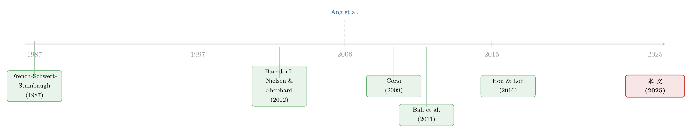

「波动率之谜」其实是一道预测题：当鞅模型预报失灵
本文读的是 Bekaert, Bergbrant & Kassa (2025, JFE)：用近 8000 万条日度收益、19000 多家公司，他们给「特质波动率」做了一场预测模型的赛马，发现最流行的 鞅模型 (martingale model) 预报最差，而 ARMA(1,1) 最好。更要命的是——当你换上一个像样的预测模型，困扰学界二十年的「IVOL 之谜」竟然消失了。整个谜团，原来只是被一小撮「预报失灵」的观测撑起来的。
1 一个被默认、却从没被认真对待的假设
先抛一个问题：当我们说「这只股票下个月的特质波动率（idiosyncratic volatility, IVOL）很高」，我们究竟是怎么知道的？
绝大多数人——包括二十年来无数篇资产定价论文——给出的答案其实出奇地简单：因为它上个月很高。也就是说，我们用本月已实现的特质方差，去预测下个月的特质方差。在时间序列的语言里，这叫 鞅模型 (martingale model)：
$$ \text{IVAR}_{i,t} = \text{IVAR}_{i,t-1} + e_{i,t} $$
这个式子朴素到几乎不像一个「模型」——它说，对未来方差的最优预测，就是当下方差本身。Ang, Hodrick, Xing & Zhang (2006) 那篇开创「IVOL 之谜」的名文，用的正是它（虽然他们并未把它写成一个显式的预测模型）。他们发现：特质波动率最高的那组股票，未来收益反而最低，而且在统计上显著为负。这就是著名的 IVOL 之谜 (IVOL puzzle)——一个让「高风险高回报」直觉彻底翻车的反常现象。
二十年来，学界为这个谜想了无数办法：有人说是套利不对称（Stambaugh, Yu & Yuan, 2015），有人说是流动性偏差（Han & Lesmond, 2011），有人说是「彩票偏好」（Bali, Cakici & Whitelaw, 2011 的 MAX 效应），Hou & Loh (2016) 干脆做了一篇大综述，把各路解释逐一称重。
但本文三位作者偏偏退回到最上游，去拷问那个从没被认真对待的前提：凭什么用鞅模型来度量「预期波动率」？如果这个度量本身就是错的呢？
2 为什么鞅模型「几乎一定」是错的
这正是本文最关键、也最优雅的一步：它不是又提出一个新的行为故事，而是回到高频波动率计量经济学，指出鞅模型在理论上几乎注定是误设的 (mis-specified)。
逻辑是这样的。我们真正想度量的，是 积分方差 (integrated variance, IV)——一段时间内瞬时方差的累积。但我们手里只有 已实现方差 (realized variance, RV)，即把日内（这里是日度）平方收益加总。二者之间差着一层度量噪声：
$$ RV_t = IV_t + u_t $$
其中 \(u_t\) 是一个零均值噪声，反映了微观结构噪声与「用有限频率采样」带来的误差（Andersen et al., 2003；Barndorff-Nielsen & Shephard, 2002 都给过严格论证）。
接着，一个自然的假设是：真正的积分方差 \(IV_t\) 服从一个简单的 一阶自回归 (AR(1)) 过程——今天的方差，是昨天方差的衰减加上一个新冲击。把这两件事放在一起会发生什么？一个 AR(1) 的「信号」，叠加一个白噪声的「度量误差」，其可观测序列 \(RV_t\) 在时间序列上恰好就是一个 ARMA(1,1) 过程。这是个经典结论。于是本文的第二个模型登场：
对照着看就懂了：鞅模型其实是 ARMA(1,1) 在 \(a_i=0\)、\(b_i=1\)、\(\theta_i=0\) 时的极端特例——它假设方差的持续性是 100%，而且没有任何回吐机制。可现实里，方差冲击常常是暂时的：一家公司爆出一次盈余意外、波动率瞬间飙升，但这种尖峰理应在下个月退潮。鞅模型看不见这种回退（mean reversion），于是在那些「大冲击之后」的月份里，它会系统性地高估未来方差。
直觉上，ARMA(1,1) 那个为正的 \(\theta\) 系数，正是用来「对冲」自回归项的过度外推：当本期出现一个大正残差（波动率尖峰），MA 项会在下一期把预测往回拉。这正是鞅模型缺失的那块拼图。
3 一场 8000 万条数据的赛马
光有理论还不够，作者把它做成了一场货真价实的赛马。
数据这边：他们从 CRSP 取了 1926 年 1 月到 2022 年 12 月、NYSE/AMEX/NASDAQ 全部个股的日度收益，合计 78,304,731 条日度（约 3,715,261 条月度）观测，覆盖 26,493 家公司。特质收益冲击 \(\varepsilon_{i,d,t}\) 用 Fama-French (1993) 三因子模型逐月在个股上估出，再把月内日度平方残差加总，得到月度特质已实现方差 IVAR：
$$ RET_{i,d,t}-RF_{d,t}=a_{i,t}+b_{i,t}\!\left(MKT_{d,t}-RF_{d,t}\right)+s_{i,t}SMB_{d,t}+h_{i,t}HML_{d,t}+\varepsilon_{i,d,t} $$
$$ \text{IVAR}_{i,t}=\sum_{d=1}^{N_t}\varepsilon_{i,d,t}^{2} $$
选手这边：除了鞅模型与 ARMA(1,1)，还有简单的 AR(1)、一个让持续性随过去方差变化的非线性自回归模型 ARNL、Corsi (2009) 的 异质自回归 (HAR) 模型，以及把市场已实现方差作为额外解释变量的三个变体——一共 7 个基准模型。嫌不够，他们还塞进了更花哨的对手：高阶 ARMA(p,q)、嵌入 四次方变差 (quarticity) 的模型（Bollerslev et al., 2016）、MIDAS 模型（Ghysels et al., 2019）和月度 EGARCH（Nelson, 1991）。
评判标准是样本外的 均方根（预测）误差 (root-mean-squared error, RMSE)。结果呢？
ARMA(1,1)单独一个模型，就对 超过 34% 的公司给出最佳样本外预测；它与「带市场方差的 ARMA」合起来，拿下 超过 46% 的公司。- 即便不是第一名，
ARMA(1,1)也几乎总在前排：对 超过 72% 的公司，它排在前三。 - 最能说明问题的是这个比值——
ARMA(1,1)的 RMSE 与「每家公司各自最优模型」RMSE 之比，中位数仅为1.0106，意思是对中位数公司，ARMA 的预测只比那个「事后最优」模型差1.06%；连 75 分位也才1.0549。 - 而那个最流行的鞅模型？全场垫底。各种更复杂的模型也没能赢过朴素的
ARMA(1,1)——又一次印证了「样本外预测里，简约模型常常笑到最后」。
到这里，故事其实可以暂停一下：一个被全行业默认使用的「预期波动率」度量，原来是所有候选里预报最差的那一个。那么，建立在它之上的那个「谜」，又当如何？
4 反转：换个预测模型，谜就没了
这才是全文真正的引爆点。
作者把不同模型给出的「预期 IVOL」分别拿去跑经典的 IVOL-收益横截面回归。结论惊人地干净：
用 鞅模型 的预期特质风险，和未来收益显著负相关（复现了二十年来的「谜」）；但换上
ARMA(1,1)——以及其余任何一个像样的模型——的预期特质风险，与收益的关系都不再显著。
而且这个「无关」非常稳健：哪怕给每家公司挑它各自样本外 RMSE 最低的「最优模型」来生成预测，哪怕每个月回测、动态地选当下表现最好的模型，结论都不变——找不到显著关系。
那鞅模型的负相关又是从哪儿冒出来的？作者把刀往下切，切到了观测层面。答案令人后背发凉：这个谜，是被极少数预报失灵的观测撑起来的。
- 每个月只要剔除 0.4% 预测误差（定义为「预测减实现」）最大的那批公司月度观测，鞅模型的负相关就直接变得不显著。
- 换个剔法也一样：在单变量（多变量）回归里，剔除 5%（7%） 「鞅减 ARMA 预测差」最大的公司月度，关系同样消失。
- 关键是，对
ARMA(1,1)做完全相同的样本剔除，它本就不显著的结论纹丝不动。
换句话说，IVOL 之谜并非一个弥漫全市场的定价规律，而是集中在那些「上月 IVAR 暴涨、本月回退」的公司——正是鞅模型因为看不见回退而严重高估的那些月份。鞅模型在这些点上把方差预报得离谱地高，而这些股票随后收益偏低，于是回归里就「长」出了一条虚假的负相关。ARMA(1,1) 因为有 MA 项替它消化了这些暂时冲击，反而不会制造这种坏点。
这意味着「IVOL 之谜」在很大程度上不是一个风险定价现象，而是一个度量误差/预测误设现象。把测量工具修好，谜就蒸发了。（关于「异象其实常常源自预期误差、而非玄学风险」这一更大的主题，可参见《不需要那些「玄学风险」》；关于「一根 t 值能否撑起一个结论」的方法论隐忧，亦可对照《事件研究里的「假阳性」》。）
5 那些「坏点」长什么样？
一个聪明的读者此刻会追问：这些让鞅模型翻车的「坏点」，是随机散落的吗？如果是，那不过是噪声；可如果它们和我们熟悉的某些公司特征系统相关，事情就有意思了——因为那意味着，过去种种对 IVOL 之谜的「解释」，本质上都在解释同一批预报失灵的观测。
作者把鞅模型的极端预测误差，对 Hou & Loh (2016) 用过的那一整套解释变量做回归。结果：这些坏点与高买卖价差 (bid-ask spread)、小规模指示变量、各种流动性度量、以及反转效应 (reversal) 强相关。而与极端误差关系最戏剧化的，是 Bali et al. (2011) 的 MAX 变量——过去一个月的最高单日收益。MAX 几乎像一个探照灯，专门照出那些「特质方差被暂时性地、过度地推高」的公司月。
这就把一长串看似各自独立的「谜之解释」收束到了一个共同机制上：高 MAX、差流动性、强反转……它们之所以都能「解释」IVOL 之谜，是因为它们都在标记同一类鞅模型会预报失灵的极端观测。
最后，作者用胜出的 ARMA(1,1) 模型刻画了「预期特质波动率」本身的性质：它随 beta 和 换手率 (turnover) 上升、随 公司规模 和 账面市值比 (book-to-market) 下降，其中规模与换手率的效应在经济意义上最大。把它在时序上加总，总体预期特质波动率整体平稳，却在几个时点出现极端尖峰——大萧条、1970 年代滞胀、科网泡沫及其后的熊市、全球金融危机、以及新冠冲击。这条序列本身，对宏观「不确定性冲击」文献是一个干净的输入。
6 文献脉络
把这条线索铺开看，会发现本文恰好坐在两条平行河流的交汇处。
一条河是 波动率预测计量经济学：从 French, Schwert & Stambaugh (1987) 第一次系统地把已实现波动率和收益挂钩，到 Barndorff-Nielsen & Shephard (2002) 奠定已实现方差的理论基础（并正是他们证明了「积分方差 + 噪声 → ARMA」），再到 Corsi (2009) 提出风靡市场层面的 HAR 模型。这条河里，「ARMA(1,1) 是已实现方差的自然模型」几乎是常识。
另一条河是 特质波动率定价：Ang, Hodrick, Xing & Zhang (2006) 抛出 IVOL 之谜，随后 Fu (2009) 用 EGARCH 预期 IVOL 找到正相关、Bali et al. (2011) 用 MAX 给出彩票解释、Han & Lesmond (2011) 归因流动性偏差、Stambaugh, Yu & Yuan (2015) 诉诸套利不对称，最后 Hou & Loh (2016) 做了一次大盘点。这条河里，争论的焦点始终是「这个负相关到底为什么存在」。

本文的妙处，在于它没有顺着第二条河再添一个行为故事，而是把第一条河的水引了过来：用波动率预测的标准工具，去拷问第二条河里那个被默认的鞅度量。于是它给出的不是「又一个解释」，而是一个更上游的论断——这个谜在很大程度上是度量没做对的结果。它与 Bekaert, Hodrick & Zhang (2012)、Herskovic et al. (2016) 等刻画特质方差动态与共同因子的工作一脉相承，但把落点放在了「预期 IVOL 的正确度量」上。
7 评论与延伸（Q&A + 研究方向）
（a）几个可能的疑问
Q：「ARMA 让谜消失」和「Fu (2009) 用 EGARCH 预期 IVOL 找到正相关」，是一回事吗？
不是。Fu (2009) 用
EGARCH的条件预期 IVOL 得到的是显著正相关，但后续文献指出其中有前视偏差/样本内成分的隐患。本文的主张更弱也更稳健：它不声称找到正相关，而是「无法拒绝无关系的原假设」——任何一个像样的样本外预测模型（包括 ARMA、AR、HAR 等），算出的预期 IVOL 都和收益不显著相关。它否定的是「负相关」的稳健性，而非确立一个新的「正相关」。
Q：剔除 0.4% 的观测就让结果翻盘，这本身会不会就是数据挖掘？
这恰恰是作者要传达的信息，而非漏洞。关键在于对称性：在完全相同的样本剔除下，鞅模型的负相关会塌掉，而
ARMA(1,1)的不显著结论不变。如果只是随机地砍掉极端值，两个模型应当同样受影响；事实是只有鞅模型脆弱，这说明问题出在鞅模型特有的预报失灵，而不是普遍的离群值敏感性。
Q：为什么是 ARMA(1,1) 而不是更复杂的模型？复杂模型不该更准吗？
理论上更复杂的设定（高阶 ARMA、quarticity、MIDAS）确有道理，但样本外预测里「简约取胜」是反复出现的规律。本文实测下来，
ARMA(1,1)在约 46% 的公司上最优、72% 的公司上进前三，复杂对手并未系统性超越它。原因在于个股月度方差信噪比低，多估的参数带来的方差，吃掉了设定更灵活带来的偏差收益。
Q：用日度（而非 5 分钟）数据算已实现方差，会不会本身就引入噪声、影响结论？
个股高频数据要到 1990 年代初才有，且对多数个股而言微观结构噪声比市场指数更严重，所以作者被迫用日度频率。他们做了一系列稳健性处理：改用 CAPM 残差、用过去三个月日度数据估因子载荷、按 French et al. (1987) 做自相关调整、以及只保留 S&P 500 成分股（以排除流动性/微结构噪声驱动）——主要结论都不变。
Q：这是否意味着「特质风险完全不被定价」？
不能这么外推。本文的论断有边界：当用合理的预测模型度量预期特质风险时，在这套横截面检验里找不到显著定价关系。这对「有效市场与传统资产定价理论」是个安慰，但它说的是「IVOL 之谜不稳健」，而非「特质风险在任何意义上都无关紧要」——比如在套利成本、最优持仓权重（Pontiff, 2006）等场景里，特质波动率依然是核心变量。
Q：MAX 效应是不是就被「证伪」了？
不是证伪，而是重新定位。本文显示
MAX与鞅模型极端预测误差关系最强，这提示MAX之所以能预测低收益，可能正是因为它精准地标记了「特质方差被暂时性高估」的公司月。也就是说，MAX效应与 IVOL 之谜或许共享同一个「预报失灵 + 回退」的底层机制，而非两个独立现象。
（b）几个可能的研究问题与提案
- 把这套「预测模型审计」搬到公司债市场
- 【经济故事】公司债收益里也有大量关于「信用波动率」「流动性波动率」的横截面异象，而它们的「预期波动率」度量同样多用朴素的滞后值。如果债券层面的特质波动率冲击也存在暂时性回退，那么某些信用异象可能同样是鞅式度量的产物。
-
【可行性】中。需要
TRACE日内/日度成交价构造债券已实现方差，难点在于债券交易稀疏、IVAR估计噪声大；识别上可借用本文的「对称样本剔除」逻辑，比较鞅 vs. ARMA 度量下异象的稳健性。 -
外资持有人与特质波动率预报失灵的关联
- 【经济故事】本文发现极端预测误差与流动性、买卖价差强相关。一个自然的猜想是：持有人结构（尤其外资/被动资金占比）会改变方差冲击的回退速度，从而改变鞅模型失灵的频率。
-
【可行性】中。可用 13F + 国际持仓数据构造持有人结构，识别上可利用指数纳入/再平衡带来的外生持有人变动，检验「冲击回退速度」是否随持有人结构系统变化。
-
预期特质波动率作为宏观不确定性代理
- 【经济故事】作者已指出总体预期 IVOL 在大萧条、滞胀、GFC、新冠等时点尖峰。宏观文献常用粗糙的市场波动率或横截面离散度代理不确定性冲击，本文给出的「正确度量」的预期特质方差，可能是更贴合理论的「企业层面产出不确定性」代理。
-
【可行性】高。序列已可由本文方法直接构造，接入标准 VAR/局部投影框架检验其对投资、就业的预测力即可。
-
「最优模型逐月切换」的可交易性
- 【经济故事】本文用「每月回测、选当下最优模型」生成预测仍得无关结论。反过来问：若把模型选择本身当成一个信号，能否构造出对方差预报误差的真实可交易策略（例如做空那些鞅模型严重高估方差的股票）？
- 【可行性】中。数据现成，难点在交易成本——这些坏点恰恰是高价差、差流动性的股票，纸面 alpha 很可能被执行成本吞掉，需诚实地纳入价差与冲击成本。
8 我的判断与参考文献
贡献。本文最漂亮的地方，是把一个二十年的行为金融「谜」，重新框定成一道时间序列预测题，并用近 8000 万条数据扎实地给出答案。它不发明新故事，而是指出旧故事所依赖的度量工具本身就是次品；更难得的是，它用「对称样本剔除」这一干净的设计，把「谜的脆弱性」和「ARMA 结论的稳健性」并排摆出来，让人很难反驳。这是一种「退一步、问得更深」的好品味。
对识别的担忧。我有三点保留。其一，全部用日度频率构造个股已实现方差，度量噪声不小，而本文的核心论点恰恰是「鞅模型对噪声敏感」——那么 ARMA(1,1) 之所以更稳，会不会部分也只是因为它对噪声的容忍度更高，而非真的更接近数据生成过程？作者的稳健性检验缓解了这一点，但没有彻底排除。其二，「无法拒绝无关系」是一个接受原假设式的论断，它对统计功效（power）敏感；个股月度回归的噪声本就大，找不到显著关系，不完全等于关系真的为零。其三，结论是横截面定价层面的，外推到「特质风险不重要」需要克制。
后续想看到的。我最想看到两件事：一是把这套审计推广到信用市场与流动性异象，看看有多少所谓「风险溢价」其实是度量误设；二是更直接地刻画那些「坏点」的微观成因——到底是盈余意外、做市商库存、还是散户彩票需求把方差暂时推高，并随后回退？把这个机制讲透，IVOL 之谜才算真正盖棺。
参考文献
- Ang, A., Hodrick, R. J., Xing, Y., Zhang, X. (2006). The cross-section of volatility and expected returns. Journal of Finance 61(1), 259–299.
- Ang, A., Hodrick, R. J., Xing, Y., Zhang, X. (2009). High idiosyncratic volatility and low returns: International and further US evidence. Journal of Financial Economics 91(1), 1–23.
- Andersen, T. G., Bollerslev, T., Diebold, F. X., Labys, P. (2003). Modeling and forecasting realized volatility. Econometrica 71(2), 579–625.
- Bali, T. G., Cakici, N., Whitelaw, R. F. (2011). Maxing out: Stocks as lotteries and the cross-section of expected returns. Journal of Financial Economics 99(2), 427–446.
- Barndorff-Nielsen, O. E., Shephard, N. (2002). Econometric analysis of realized volatility and its use in estimating stochastic volatility models. Journal of the Royal Statistical Society: Series B 64(2), 253–280.
- Bekaert, G., Bergbrant, M., Kassa, H. (2025). Expected idiosyncratic volatility. Journal of Financial Economics 167, 104023.
- Bekaert, G., Hodrick, R. J., Zhang, X. (2012). Aggregate idiosyncratic volatility. Journal of Financial and Quantitative Analysis 47(6), 1155–1185.
- Bollerslev, T., Patton, A. J., Quaedvlieg, R. (2016). Exploiting the errors: A simple approach for improved volatility forecasting. Journal of Econometrics 192(1), 1–18.
- Corsi, F. (2009). A simple approximate long-memory model of realized volatility. Journal of Financial Econometrics 7(2), 174–196.
- Fama, E. F., French, K. R. (1993). Common risk factors in the returns on stocks and bonds. Journal of Financial Economics 33(1), 3–56.
- French, K. R., Schwert, G. W., Stambaugh, R. F. (1987). Expected stock returns and volatility. Journal of Financial Economics 19(1), 3–29.
- Fu, F. (2009). Idiosyncratic risk and the cross-section of expected stock returns. Journal of Financial Economics 91(1), 24–37.
- Han, Y., Lesmond, D. (2011). Liquidity biases and the pricing of cross-sectional idiosyncratic volatility. Review of Financial Studies 24(5), 1590–1629.
- Herskovic, B., Kelly, B., Lustig, H., Van Nieuwerburgh, S. (2016). The common factor in idiosyncratic volatility: Quantitative asset pricing implications. Journal of Financial Economics 119(2), 249–283.
- Hou, K., Loh, R. K. (2016). Have we solved the idiosyncratic volatility puzzle? Journal of Financial Economics 121(1), 167–194.
- Nelson, D. B. (1991). Conditional heteroskedasticity in asset returns: A new approach. Econometrica 59(2), 347–370.
- Stambaugh, R. F., Yu, J., Yuan, Y. (2015). Arbitrage asymmetry and the idiosyncratic volatility puzzle. Journal of Finance 70(5), 1903–1948.